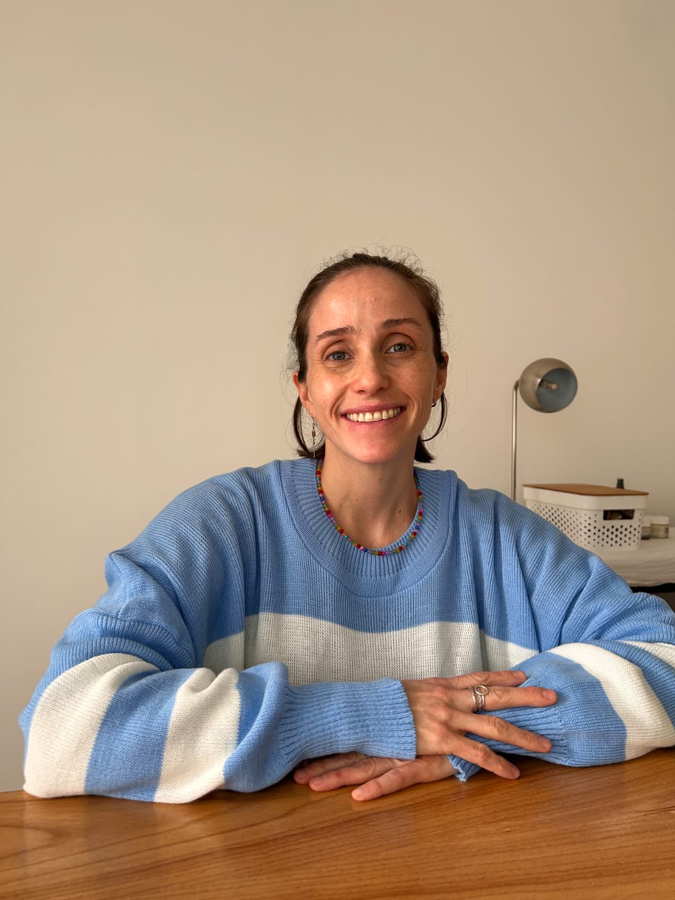

Psicóloga Infantil · Devoto & Ramos Mejía
Psic. · Lic. en Psicología · Prof. en Psicología · Posgrado Ciencias Cognitivas (Favaloro)
Acompañando familiasEscribime por WhatsApp
en la crianza real.

Soy Licenciada y Profesora en Psicología, graduada de la Universidad de Buenos Aires, con formación en terapia cognitivo-conductual y un enfoque centrado en la persona. Me especializo en el tratamiento y coordinación de intervenciones para niños con desafíos en el desarrollo y adultos con distintas discapacidades.
Soy cofundadora de la Asociación Civil "Bruco para la Inclusión de Niños y Jóvenes con Discapacidad", donde realizamos jornadas de sensibilización, capacitaciones y orientación gratuita.
Trabajo con el compromiso de construir espacios más inclusivos, donde cada persona pueda desarrollar su máximo potencial.
Psicología Infantil
Evaluación y tratamiento de niños con desafíos en el desarrollo, conducta y aprendizaje.
Crianza y Vínculo
Acompañamiento a familias para fortalecer el vínculo y entender las etapas del desarrollo.
Preadolescencia
Una de las etapas más intensas y menos acompañadas. Herramientas para padres y equipos.
Discapacidad e Inclusión
Intervención interdisciplinaria para niños y adultos. Capacitaciones para familias y profesionales.
Adolescentes y Adultos
Un espacio de escucha y acompañamiento para quienes buscan apoyo en momentos de cambio, autoconocimiento o bienestar emocional.
Si bien mi foco principal es la infancia y la crianza, también acompaño a adolescentes y adultos que buscan un espacio de escucha, autoconocimiento o apoyo en momentos de cambio.
Cada etapa de la vida puede requerir un acompañamiento distinto. Si sentís que necesitás ese espacio, estoy disponible para escucharte.
Tu preocupación no necesita justificación. Si algo en el desarrollo o la rutina de tu hijo/a te inquieta, eso ya es motivo suficiente para buscar respuestas. En el consultorio no juzgamos ni comparamos — acompañamos. La primera consulta es un espacio para conocernos, hablar sin filtros y empezar a armar un camino juntos.
Es normal, y tiene una explicación. La preadolescencia es una de las etapas más intensas del desarrollo y una de las menos habladas. No son niños, pero tampoco son adolescentes — están en el medio de todo. Nuestro rol cambia: menos preguntar, más estar disponibles. Menos buscar respuestas, más ofrecer un lugar seguro al que puedan volver.
Las sesiones son un espacio confidencial, sin juicios ni comparaciones. Trabajamos desde la terapia cognitivo-conductual con un enfoque centrado en la persona. Dependiendo del caso, puede incluirse trabajo con la familia, orientación a padres, y coordinación con otros profesionales.
Consultame por WhatsApp para coordinar la modalidad que mejor se adapte a tu situación. Podemos hablar y encontrar la opción más cómoda para vos y tu familia.